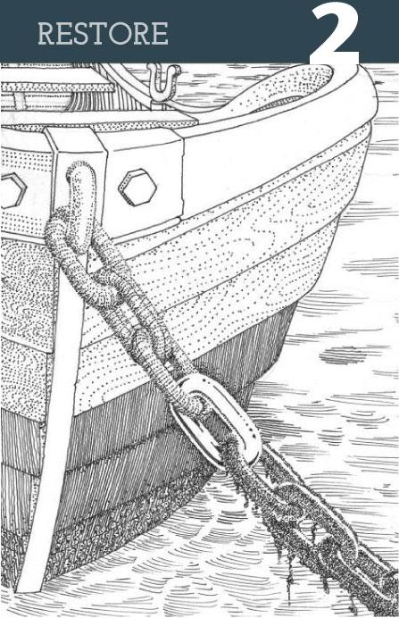
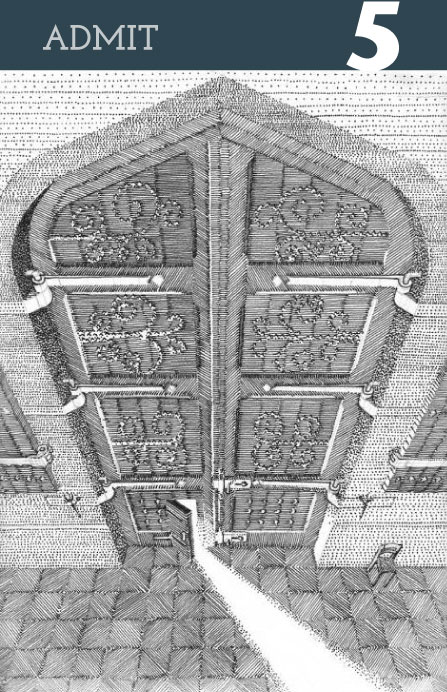
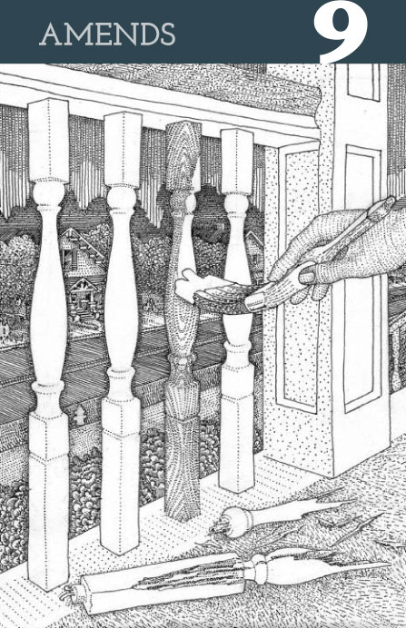

TWELVE DRAWINGS
OFF
ON
1930s definitions of
Twelve Step words
accompanied by
new illustrations
Twelve Steps
POWERLESS
adjective.
Destitute of the ability (whether physical, mental, or moral) to act.

Restore. verb. To give something back which has been lost or taken. Drawing shows a weathered chain link, of which, one link is shiny and new.
Decision. noun. The act of terminating by giving judgement on. Drawing shows a train approaching a fork in the tracks.
Inventory. noun. An account, catalog, or schedule made by the executor of all the goods and chattels and sometimes the real estate, of a deceased person.

Admit. verb. To suffer to enter. Drawing shows is from a high point of view, looking down at a massive set of closed doors.
Ready. adjective. Prepared for what one is about to do or experience.
Remove. verb. To change or shift a location, position, station or residence of.
Harm. verb. To hurt.

Amends. noun. Compensation for loss or injury.
Continue. verb. To remain ina given place or condition.
Conscious. noun. Sharing knowledge. And Contact. noun. A union or junction of bodies.
Adhibenda est munditia, non odiosa neque exquisita nimis.
Twelve Promises
Powerless. adjective. Destitute of the ability (whether physical, mental, or moral) to act.
Restore. verb. To give something back which has been lost or taken. Drawing shows a weathered chain link, of which, one link is shiny and new.
Decision. noun. The act of terminating by giving judgement on. Drawing shows a train approaching a fork in the tracks.
Inventory. noun. An account, catalog, or schedule made by the executor of all the goods and chattels and sometimes the real estate, of a deceased person.
Admit. verb. To suffer to enter. Drawing shows is from a high point of view, looking down at a massive set of closed doors.
Ready. adjective. Prepared for what one is about to do or experience.
Remove. verb. To change or shift a location, position, station or residence of.
Harm. verb. To hurt.
Amends. noun. Compensation for loss or injury.
Continue. verb. To remain ina given place or condition.
Conscious. noun. Sharing knowledge. And Contact. noun. A union or junction of bodies.
Adhibenda est munditia, non odiosa neque exquisita nimis.